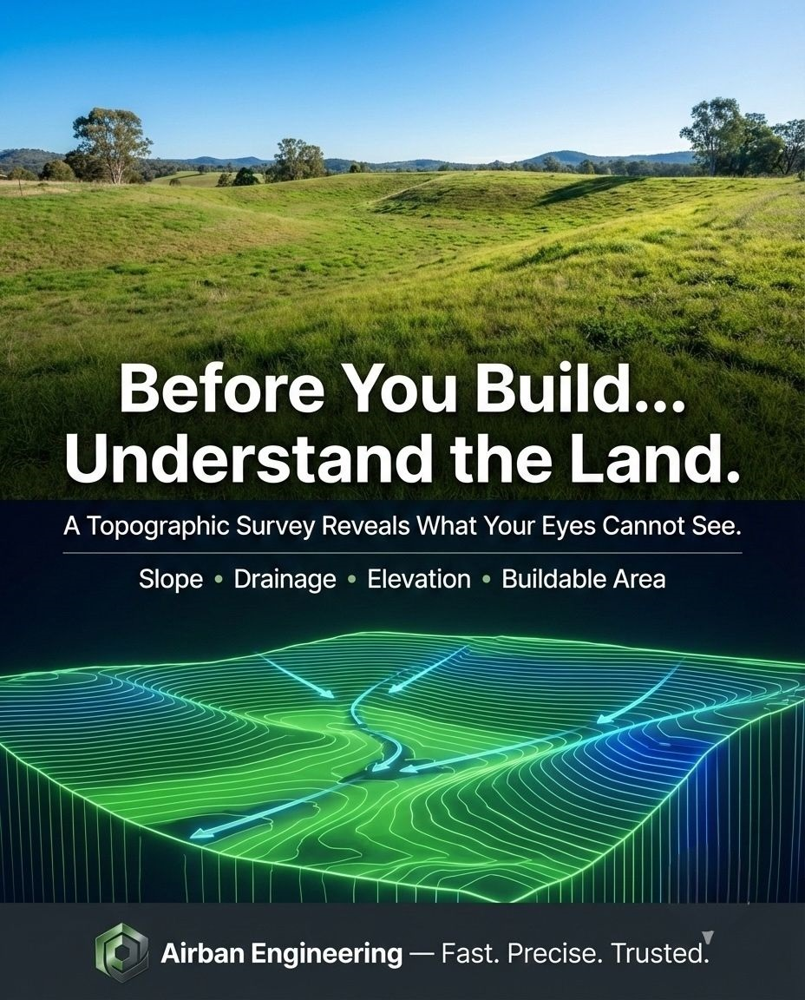

“Before you build on land, understand the land.”
Before any construction begins, understanding the land is critical. A topographic survey provides detailed information about terrain, elevations, slopes, drainage patterns and physical features on a site.
In Ghana, many construction problems happen because this step is skipped. People design buildings, roads and drainage systems without first understanding the shape and behaviour of the land.
1. You Understand the True Shape of the Land
Land is rarely perfectly flat. Even when a site looks level, there may be subtle slopes, depressions or high points that affect design and construction.
A topographic survey helps reveal:
- Ground levels and elevations
- Slopes and low-lying areas
- Natural drainage paths
- Existing features on the land
- Terrain changes that may affect design
2. It Helps With Proper Drainage Planning
Poor drainage is one of the most common problems in construction. Without accurate elevation data, water flow cannot be properly managed.
This can lead to:
- Flooding around buildings
- Erosion
- Water entering foundations
- Damage to roads and pavements
- Long-term structural problems
3. It Helps Avoid Costly Design Mistakes
Architects and engineers rely on accurate ground data to design properly. When topographic information is missing, designs may not match the site.
This can result in redesigns, construction delays, extra earthworks and unexpected project costs.
4. It Supports Better Foundation Design
The strength and stability of a structure depend partly on how well the foundation responds to the terrain.
A topographic survey helps professionals understand the levels and slopes around the building area before design decisions are made.
5. It Is Essential for Roads, Drainage and Infrastructure
Roads, drains, culverts, retaining walls and site layouts all depend on accurate elevation data.
Without topographic information, infrastructure design becomes guesswork.
- Road alignments need level information
- Drainage channels need proper fall
- Cut-and-fill planning depends on terrain data
- Site layouts must respond to the land shape
6. Serious Development Requires Proper Ground Data
Any serious residential, commercial, industrial or institutional project should begin with proper site information.
A topographic survey gives the project team reliable ground data before expensive decisions are made.
When Should You Request a Topographic Survey?
You should consider a topographic survey when:
- You are preparing to build
- You need drainage design
- You are developing a large parcel
- You are planning road or infrastructure works
- Your land has slopes, valleys or water flow concerns
- Your architect or engineer needs accurate site levels
Planning a Construction Project?
Start with a topographic survey before design or construction begins. It can save you from costly mistakes later.
Airban Engineering provides topographic surveys, site plans, boundary surveys and geospatial services across Ghana.
Request Topographic SurveyNeed professional land surveying services in Ghana? Visit our land surveying page here.